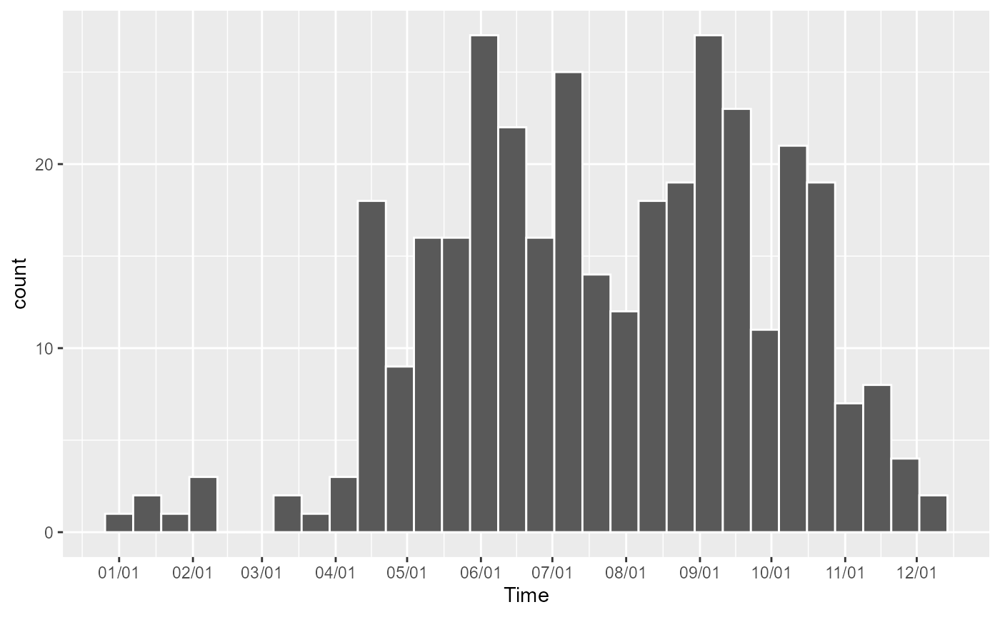
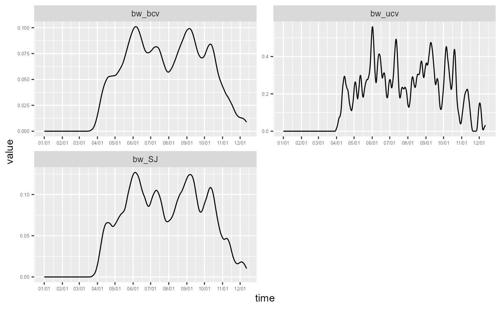
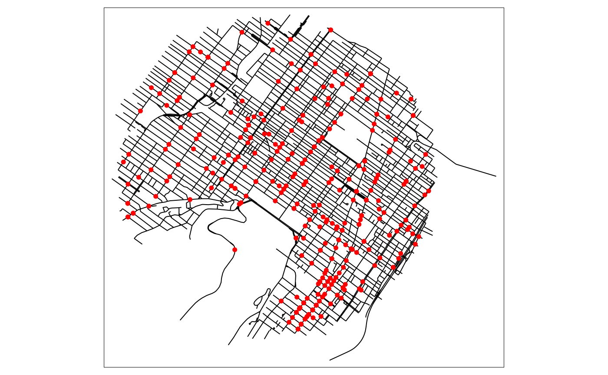

Temporal Network Kernel Density Estimate
Jeremy Gelb
2022-03-17
Source:vignettes/TNKDE.Rmd
TNKDE.RmdIntroduction
Events recorded on a network often also have a temporal dimension. In that context, one could estimate the density of events in both time and network space.
The spatio-temporal kernel is calculated as the product of the network kernel density and the time kernel density. For a sample point at location l and time t, the Temporal Network Kernel Density Estimate (TNKDE) is calculated as follows:
\[tnkde(l,t) = \frac{1}{bw_{net} * bw_{time}} * \sum^n_{i=1}(k_{net}(d(l,i_l),bw_{net})*k_{time}(d(t,i_t),bw_{time}))\]
with:
- \(k_{net}\) the network kernel density function
- \(k_{time}\) the time kernel density function
- \(bw_{net}\) the bandwidth used for the network kernel
- \(bw_{time}\) the bandwidth used for the time kernel
- n the number of events
- i an event at location \(i_l\) and time \(i_t\)
- \(d(a,b)\) the distance (in time or space) between a and b
As specified in the previous formula, two bandwidths are necessary, one for space and one for time.
We give in this vignette a short example with bike accidents data in 2016 in the central districts of Montreal.
Temporal dimension
We start here by exploring the density of events in time.
# first load data and packages
library(spNetwork)
library(tmap)
library(sf)
eventsgpkg <- system.file("extdata", "events.gpkg", package = "spNetwork", mustWork = TRUE)
bike_accidents <- sf::st_read(eventsgpkg,layer="bike_accidents", quiet = TRUE)
# converting the Date field to a numeric field (counting days)
bike_accidents$Time <- as.POSIXct(bike_accidents$Date, format = "%Y/%m/%d")
start <- as.POSIXct("2016/01/01", format = "%Y/%m/%d")
bike_accidents$Time <- difftime(bike_accidents$Time, start, units = "days")
bike_accidents$Time <- as.numeric(bike_accidents$Time)
months <- as.character(1:12)
months <- ifelse(nchar(months)==1, paste0("0", months), months)
months_starts_labs <- paste("2016/",months,"/01", sep = "")
months_starts_num <- as.POSIXct(months_starts_labs, format = "%Y/%m/%d")
months_starts_num <- difftime(months_starts_num, start, units = "days")
months_starts_num <- as.numeric(months_starts_num)
months_starts_labs <- gsub("2016/", "", months_starts_labs, fixed = TRUE)
ggplot(bike_accidents) +
geom_histogram(aes(x = Time), bins = 30, color = "white") +
scale_x_continuous(breaks = months_starts_num, labels = months_starts_labs)
It is not surprising to observe that most of the accidents occur during spring, summer, and fall. We will remove the lonely observations during the three first months of the year because they might influence the bandwidths’ size latter.
bike_accidents <- subset(bike_accidents, bike_accidents$Time >= 90)We can now calculate the kernel density values in time for several bandwidths.
w <- rep(1,nrow(bike_accidents))
samples <- seq(0, max(bike_accidents$Time), 0.5)
time_kernel_values <- data.frame(
bw_10 = tkde(bike_accidents$Time, w = w, samples = samples, bw = 10, kernel_name = "quartic"),
bw_20 = tkde(bike_accidents$Time, w = w, samples = samples, bw = 20, kernel_name = "quartic"),
bw_30 = tkde(bike_accidents$Time, w = w, samples = samples, bw = 30, kernel_name = "quartic"),
bw_40 = tkde(bike_accidents$Time, w = w, samples = samples, bw = 40, kernel_name = "quartic"),
bw_50 = tkde(bike_accidents$Time, w = w, samples = samples, bw = 50, kernel_name = "quartic"),
bw_60 = tkde(bike_accidents$Time, w = w, samples = samples, bw = 60, kernel_name = "quartic"),
time = samples
)
df_time <- reshape2::melt(time_kernel_values,id.vars = "time")
df_time$variable <- as.factor(df_time$variable)
ggplot(data = df_time) +
geom_line(aes(x = time, y = value)) +
scale_x_continuous(breaks = months_starts_num, labels = months_starts_labs) +
facet_wrap(vars(variable), ncol=2, scales = "free") +
theme(axis.text = element_text(size = 5))It seems that a bandwidth between 30 and 40 days capture the bimodal shape of the temporal dimension of bike accidents. The lower densities during July and August are likely caused by the lower traffic due to holidays.
It is also possible to use the classical functions from R to find a bandwidth with a datadriven approach.
bw1 <- bw.bcv(bike_accidents$Time, nb = 1000, lower = 1, upper = 80)
bw2 <- bw.ucv(bike_accidents$Time, nb = 1000, lower = 1, upper = 80)
bw3 <- bw.SJ(bike_accidents$Time, nb = 1000, lower = 1, upper = 80)
time_kernel_values <- data.frame(
bw_bcv = tkde(bike_accidents$Time, w = w, samples = samples, bw = bw1, kernel_name = "quartic"),
bw_ucv = tkde(bike_accidents$Time, w = w, samples = samples, bw = bw2, kernel_name = "quartic"),
bw_SJ = tkde(bike_accidents$Time, w = w, samples = samples, bw = bw3, kernel_name = "quartic"),
time = samples
)
df_time <- reshape2::melt(time_kernel_values,id.vars = "time")
df_time$variable <- as.factor(df_time$variable)
ggplot(data = df_time) +
geom_line(aes(x = time, y = value)) +
scale_x_continuous(breaks = months_starts_num, labels = months_starts_labs) +
facet_wrap(vars(variable), ncol=2, scales = "free") +
theme(axis.text = element_text(size = 5))
In that case, the automatic bandwidth selection methods yield much more noisy results with small bandwidths. Bike accidents are rare events and too small time bandwidths would create results with meaningless hot spots.
Spatial dimension
Before considering the spatio-temporal case, we can also investigate the temporal dimension.
# loading the road network
networkgpkg <- system.file("extdata", "networks.gpkg", package = "spNetwork", mustWork = TRUE)
mtl_network <- sf::st_read(networkgpkg,layer="mtl_network", quiet = TRUE)
tm_shape(mtl_network) +
tm_lines(col = "black") +
tm_shape(bike_accidents) +
tm_dots(col = "red", size = 0.1)
As suggested in the vignette NKDE, we will use an adaptive bandwidth of 450 metres for the discontinuous kernel.
# creating sample points
lixels <- lixelize_lines(mtl_network, 50)
sample_points <- lines_center(lixels)
# calculating the densities
nkde_densities <- nkde(lines = mtl_network,
events = bike_accidents,
w = rep(1,nrow(bike_accidents)),
samples = sample_points,
kernel_name = "quartic",
bw = 450,
adaptive = TRUE, trim_bw = 900,
method = "discontinuous",
div = "bw",
max_depth = 10,
digits = 2, tol = 0.1, agg = 5,
grid_shape = c(1,1),
verbose = FALSE)
sample_points$density <- nkde_densities$k * 1000
tm_shape(sample_points) +
tm_dots(col = "density", style = "kmeans", n = 8, palette = "viridis", size = 0.05) +
tm_layout(legend.outside = TRUE)Several hot spots could already be identified, but we have no information about their location in time. The previous map represent the average density during the full period.
Spatio-temporal
We can now estimate the kernel density in both space and time. Note that increasing the dimension leads to larger bandwidths.
cv_scores <- bws_tnkde_cv_likelihood_calc(
bw_net_range = c(100,1000),
bw_net_step = 100,
bw_time_range = c(10,60),
bw_time_step = 10,
lines = mtl_network,
events = bike_accidents,
time_field = "Time",
w = rep(1, length(bike_accidents)),
kernel_name = "quartic",
method = "discontinuous",
diggle_correction = FALSE,
study_area = NULL,
max_depth = 10,
digits = 2,
tol = 0.1,
agg = 15,
sparse=TRUE,
grid_shape=c(1,1),
sub_sample=1,
verbose = FALSE,
check = TRUE)
knitr::kable(cv_scores)| 10 | 20 | 30 | 40 | 50 | 60 | |
|---|---|---|---|---|---|---|
| 100 | -685.83950 | -653.22875 | -643.02542 | -622.70580 | -596.23889 | -559.70551 |
| 200 | -587.78721 | -489.93581 | -453.39381 | -408.76247 | -366.04623 | -339.61319 |
| 300 | -491.89467 | -367.76273 | -302.90003 | -240.13611 | -199.50315 | -159.13310 |
| 400 | -398.34746 | -233.82342 | -183.04833 | -134.51254 | -102.11038 | -79.89645 |
| 500 | -270.19972 | -134.30754 | -83.69314 | -59.46574 | -47.27078 | -31.17834 |
| 600 | -190.87619 | -99.59623 | -63.26606 | -41.08428 | -32.99876 | -28.99715 |
| 700 | -132.13711 | -71.16703 | -45.00193 | -32.92317 | -28.89739 | -24.95923 |
| 800 | -105.43621 | -52.89599 | -34.79394 | -28.83834 | -28.87788 | -24.96493 |
| 900 | -73.14281 | -42.66780 | -30.69131 | -26.80878 | -26.89946 | -25.01179 |
| 1000 | -66.74994 | -38.62177 | -28.70325 | -26.83303 | -26.94546 | -25.07208 |
According to the leave one out cross validation method, the optimal set of bandwidths is 700 metres and 60 days. As expected, larger bandwidths are required because the density of the events are spread both in space and time.
# choosing sample in times (every 10 days)
sample_time <- seq(0, max(bike_accidents$Time), 10)
# calculating densities
tnkde_densities <- tnkde(lines = mtl_network,
events = bike_accidents, time_field = "Time", w = rep(1, nrow(bike_accidents)),
samples_loc = sample_points, samples_time = sample_time,
kernel_name = "quartic", bw_net = 700, bw_time = 60, adaptive = TRUE,
trim_bw_net = 900, trim_bw_time = 80, method = "discontinuous",
div = "bw", max_depth = 10, digits = 2, tol = 0.01, agg = 15, grid_shape = c(1,1),
verbose = FALSE)
# creating a color palette for all the densities
library(classInt)
library(viridis)
all_densities <- c(tnkde_densities$k)
color_breaks <- classIntervals(all_densities, n = 10, style = "kmeans")
# generating a map at each sample time
all_maps <- lapply(1:ncol(tnkde_densities$k), function(i){
time <- sample_time[[i]]
date <- as.Date(start) + time
sample_points$density <- tnkde_densities$k[,i]
map1 <- tm_shape(sample_points) +
tm_dots(col = "density", size = 0.01,
breaks = color_breaks$brks, palette = viridis(10)) +
tm_layout(legend.show=FALSE, main.title = as.character(date), main.title.size = 0.5)
return(map1)
})
# creating a gif with all the maps
tmap_animation(all_maps, filename = "images/animated_map.gif",
width = 1000, height = 1000, dpi = 300, delay = 50)
knitr::include_graphics("images/animated_map.gif")
The locations of the hot spots are changing during the year. This information was hidden when only a spatial NKDE was used.